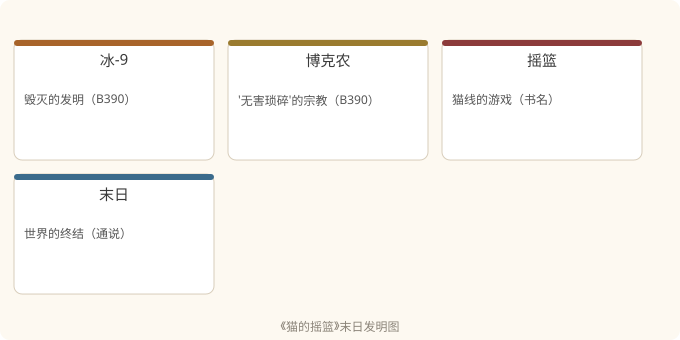

猫的摇篮
一、基本信息
| 作者 | 库尔特·冯内古特 |
|---|---|
| 成书/出版 | 1963年（Britannica B390：Cat's Cradle (1963)——以此论文获芝加哥大学人类学硕士（1963）） Kurt Vonnegut — Encyclopaedia Britannica（百科全书） |
| 国别/地区 | 美国 |
| 时代 | 现当代 · 20世纪60年代初 |
| 体裁 | 长篇小说 |
| 语言 | 英语 |

《猫的摇篮》末日发明图（主题·结构图）
二、创作背景
Britannica（B390）：Caribbean islanders practicing 'a religion consisting of harmless trivialities' encounter a substance that 'eventually destroys all life on Earth'。
Britannica（B390）：冯内古特把它作为论文提交——芝加哥大学授予人类学硕士（1963）。
题材（通说待核）：'冰-9'与博克农教——末日发明的讽刺。
三、内容脉络
（通说待核）'冰-9'的发明与加勒比岛国博克农教。
（通说待核）世界终结的'猫的摇篮'游戏。
四、主要人物表
| 人物 | 身份 | 说明 |
|---|---|---|
| 霍尼克博士 | '冰-9'发明者 | （通说待核，B390未载） |
| 博克农 | 宗教创始人 | （通说待核） |
五、主题与艺术特点
- '无害琐碎的宗教'（B390：harmless trivialities）。
- '冰-9'：毁灭的发明（B390：destroys all life on Earth）。
- 科学家的天真（通说待核）。
六、影响与评论
- Britannica：人类学硕士论文（1963——B390）。
Kurt Vonnegut — Encyclopaedia Britannica（百科全书） - Britannica：'black humor'（B390 交叉）。
Kurt Vonnegut — Encyclopaedia Britannica（百科全书）
七、阅读建议
难点
- '博克农'教义。
- '冰-9'的物理寓言。
- 《猫的摇篮》中译本（译林等——通说待核）。
- 英文原版。
冯内古特入门首选；后接《五号屠场》。
八、待核实
- 霍尼克/博克农人名核对（通说）。
- 1963年出版（Holt, Rinehart说）待核。
- '冰-9'细节待核。
本页主要来源
库尔特·冯内古特的其他收录作品：猫的摇篮